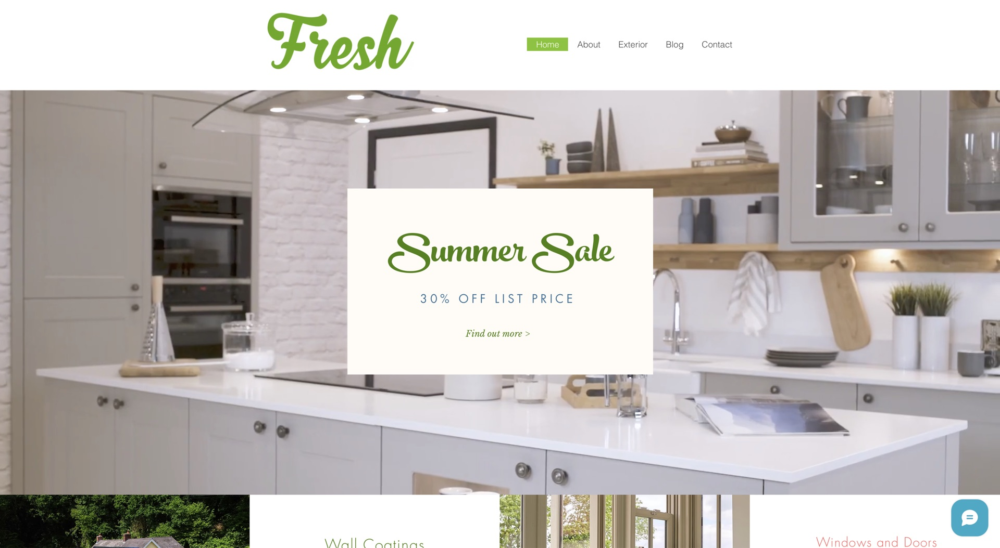
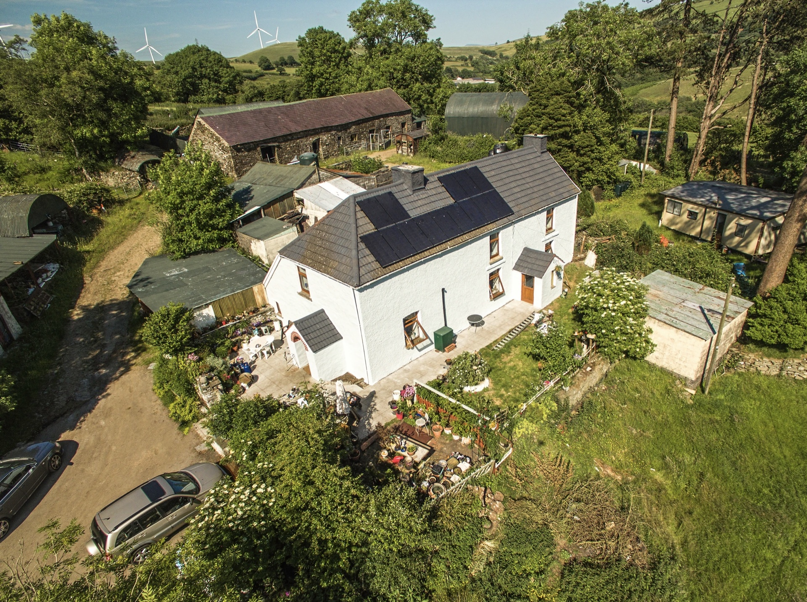
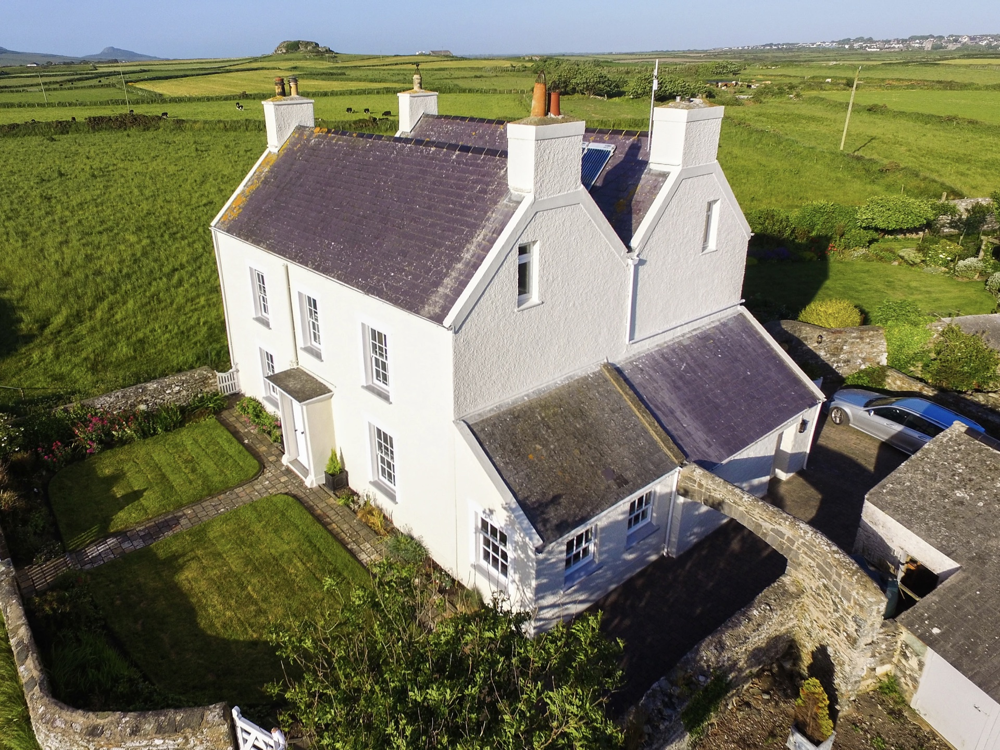
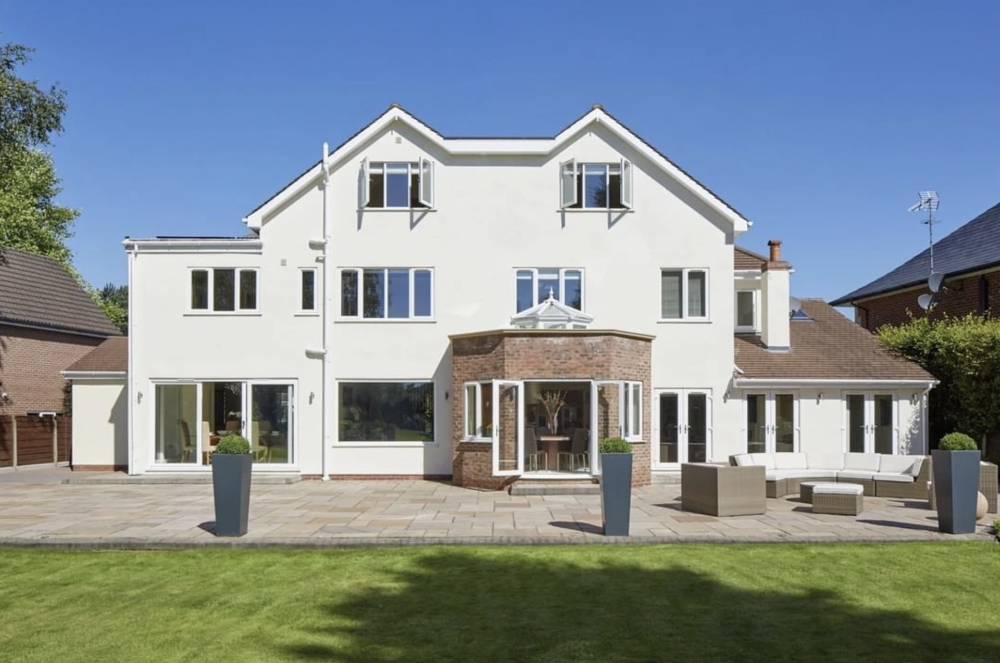
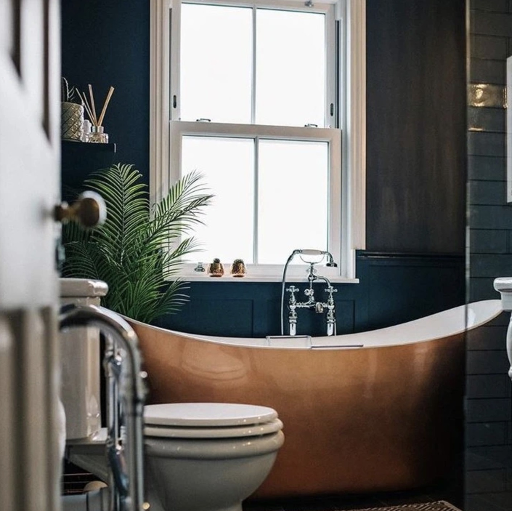

§ 04 — OutcomePremium work, priced accordingly.
A position the company can hold

Fig. 04 — Completed exteriorD&M · 2025
The work was already premium — extensions and renovations that genuinely transform properties. The brand needed to price accordingly.




The interior photography focuses on rooms where the renovation choices are the loudest argument — copper tubs, dark panelling, considered light.
The aerials make the same argument at building scale. Both formats, one position: we make houses worth photographing.
